Australia - Adventure Tour

About
You will travel throughout along Australia’s beautiful East Coast between Sydney and Cairns, exploring the World Heritage Areas of the Blue Mountains, Fraser Island which is the world’s largest sand island, the Great Barrier Reef and Wet Tropics areas, in addition to primary rainforests, wild rivers, pristine beaches and the cultural attractions of Sydney and Cairns.
- 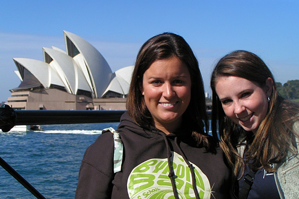Day 1 – Arrive in Sydney: Return to Sydney from your Conservation Volunteer Project. Unwind with a free night out in Sydney (host of the 2000 Olympic Games)." />
- 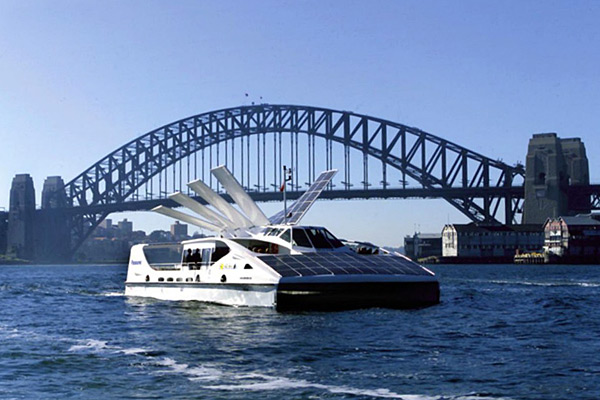Day 2 – Sydney (Free Day / Harbor Cruise): Free Day to explore the best of Sydney including Darling Harbor, the historical Rocks area, the Royal Botanical Gardens, Sydney Opera House, beautiful beaches and much more. You may want to visit the Sydney Tower or Sydney Aquarium and in the evening take a sunset cocktail cruise in one of the most famous harbors in the world (ISV Optional Activity Package)." />
- 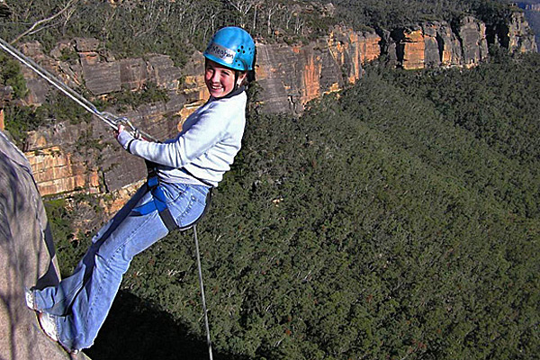Day 3 – *Blue Mountains (Wildlife Park / Rappelling): Today we drive 40 miles west of Sydney to the breathtaking Blue Mountains. On the way we stop at Featherdale Wildlife Park (ISV Included Activity) to see Australia’s unique wildlife such as kangaroos and koalas. In the Blue Mountains we will get to see the famous “Three Sisters” rock formations, and in the afternoon test your courage by rappelling (ISV Optional Activity Package). The scenic sandstone cliffs and gorges of the Blue Mountains are an excellent rappelling location for beginners and experts alike! After dinner, we will take an overnight trip to Byron Bay." />
- 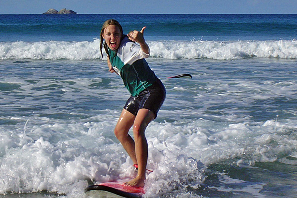Day 4 – Byron Bay (Surf Lessons): Today we experience the friendly and eclectic culture of beautiful Byron Bay. Learn to surf at the beautiful Byron Bay Beach (ISV Optional Activity Package), and you might be lucky enough to see dolphins or migrating whales. Explore the town or hike to Cape Byron (Australia's eastern most point)." />
- 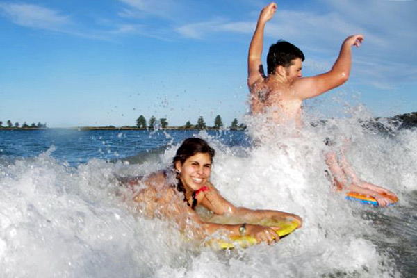Day 5 – Byron Bay (Free Day): Today is a free day to enjoy the beautiful town of Byron Bay and practice your new surfing skills! You may want to relax at the beach, explore the town, trek to the lighthouse at Cape Byron (Australia's eastern most point) for views of the Pacific Ocean or take part in a number of additional activities available." />
")
- 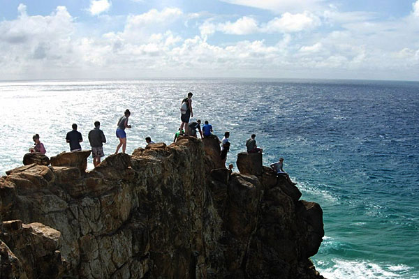Day 7 – *Fraser Island (Indian Head Tour): Today we will discover the best of Fraser Island on the Indian Head Full-Day Tour (ISV Included Activity). We will cruise along the amazing 75-mile beach to swim in Eli Creek, see the famous Maheno shipwreck and climb to the top of Indian Head for magnificent views of the surrounding sand below, beaches and the Pacific Ocean." />
- 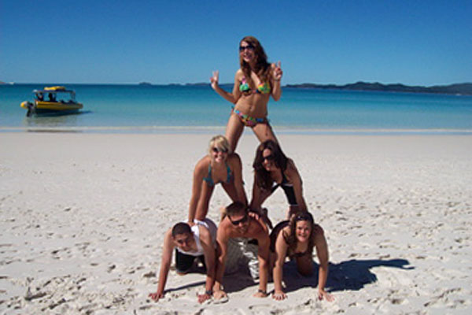Day 8 – *Fraser Island to Airlie Beach (Lake Wabby & Birrabeen): Today we continue to experience the amazing scenery and wildlife (e.g. dingoes) of Fraser Island. This morning you will have the option to trek over sand dunes and swim in the beautiful emerald-green Lake Wabby (ISV Optional Activity Package), the deepest of Fraser Islands lakes. Tonight, we leave for the backpacker town of Airlie Beach, gateway to the Whitsunday Islands." />
- 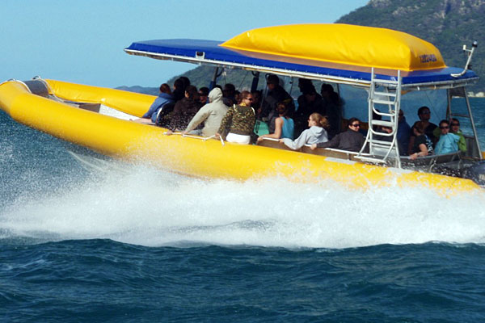Day 9 – Airlie Beach (Ocean Rafting): Airlie Beach is the perfect place to soak up the sun and the warm tropical weather! Today you’ll have the option to go Ocean Rafting (ISV Optional Activity Package), to Whitehaven Beach. Experience what is known as the whitest sand in the world at Whitehaven Beach. On this Ocean Rafting adventure participants will also go snorkeling and take a guided walk on Whitsunday Island. This evening, enjoy the nightlife of this lively town filled with international travelers." />
- 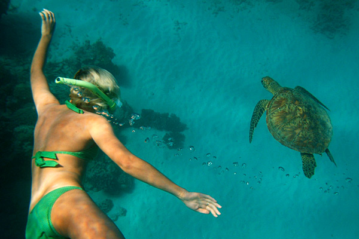Day 10 – Airlie Beach to Cairns: We continue north to the city of Cairns, gateway to the Great Barrier Reef, and the adrenaline capital of Australia." />
- 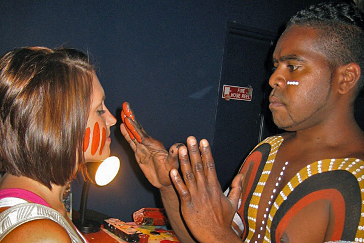Day 11 – Cairns (Reef Teach & Tjapukai Aboriginal Cultural Park): In the morning we will visit Tjapukai Aboriginal Cultural Park (ISV Included Activity) where we will learn about the history, art, dance and way of life of Australia's indigenous people. This afternoon we will visit 'Reef Teach' (ISV Included Activity), a fun information session on the Great Barrier Reef which will prepare you for your snorkeling trip tomorrow." />
- 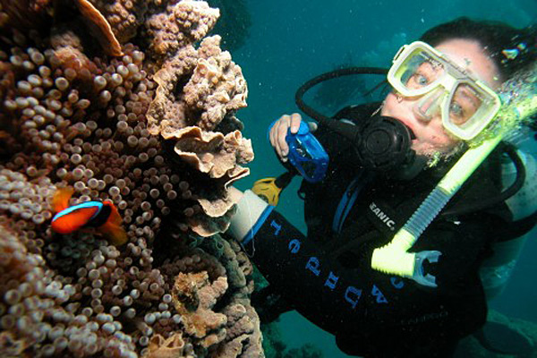Day 12 – Cairns (*Great Barrier Reef): We spend the day on the Great Barrier Reef for a full day of snorkeling at two different reefs (ISV Included Activity). There’s also the opportunity to scuba dive at an additional cost (even if you have never been scuba diving before!) Here you will explore the diversity of marine life from the largest reef of living coral in the world. Some participants will take the option to spend the day and night onboard another vessel called “Kangaroo Explorer”** and take advantage of an extra day of diving and snorkeling. (Limited availability)" />
- 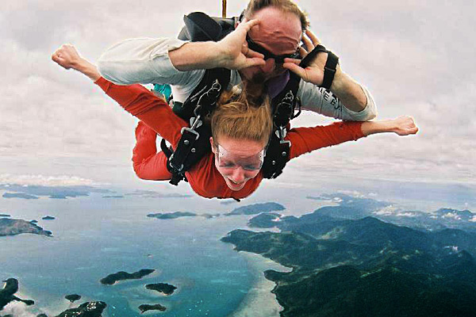Day 13 – Cairns (Free Day): A free day to explore the many attractions in Cairns & surrounding areas. Options available include spending an extra day on the Great Barrier Reef, skydiving, bungee jumping or exploring other areas in or around Cairns including Cape Tribulation where two World Heritage areas meet: the *Daintree Rainforest and the * Great Barrier Reef.. Those participants who opted to spend the night on the “Kangaroo Explorer” (see above) will return this afternoon." />
- 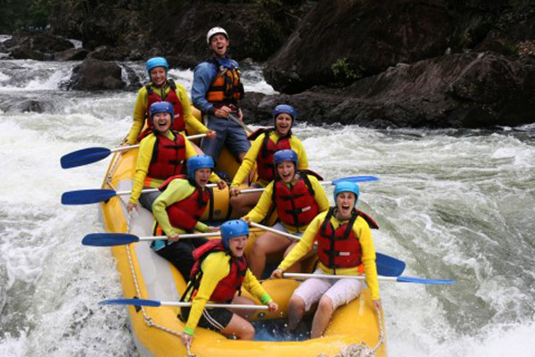Day 14 – Tully River: Depart for the Tully River to white water raft grade III and IV rapids (ISV Included Activity) through pristine tropical rainforest in yet another World Heritage area, the *Wet Tropics!" />
Optional Activity Package (OAP)
Blue Mountains
Experience the rush of rappelling down the beautiful
sandstone cliffs of the World Heritage listed Blue Mountains.